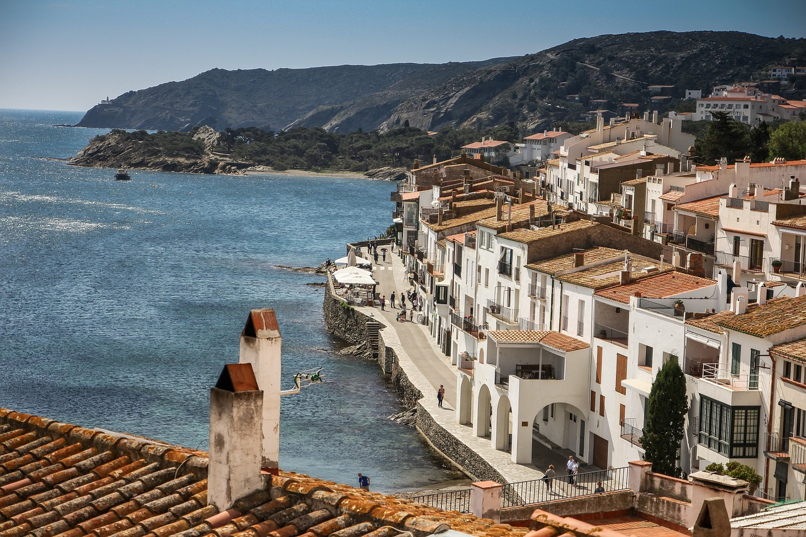
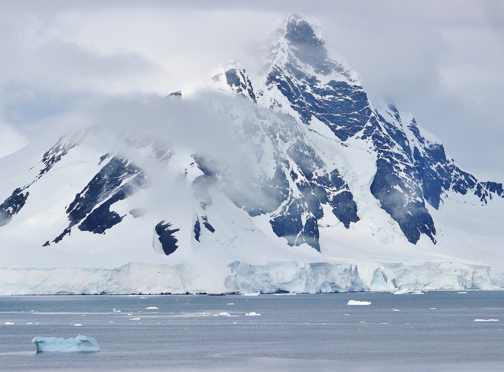

Whence come the thousands of photographs used every month by newspapers and magazines? More than that, whence do the photographs come which are used by makers of calendars, postcards, for advertisements, and for illustrating books, stories and articles?
This little book is a practical, up-to-the-minute answer to the question:
"How can I make my camera-work profitable?"
At first thought, the answer is, "From professional photographers and publisher-photo-services." But professional photographers do not produce one-third of the photographs used, and publisher-photo-services are supplied by that same large number of camerists that supply publications with most of their prints.
No one can deny that the greatest number of prints published are bought from amateur photographers in towns no larger than the average, and sometimes smaller.
The camerist does not have to get in an air-ship and fly to Africa in order to produce photographs that will sell. Read what Waldon Fawcett says, himself a success at selling his photographs:
The photographer is apt to think that all his ambitions would be realised if only he could journey to foreign shores or to distant corners of our country; or if he could attend the spectacular events that focus the attention of the world now and then.This is a delusion. The real triumph is that of the photographer who utilises the material ready at hand in his own district, be it large or small.
And more, a person does not have to be an expert photographer in order to succeed at the work. Here is what one prominent writer says about it:
"The requirements of the field are well within the capabilities of even the beginner in photography, viz.; the ability to make good negatives and good prints, the ability to recognise news-value, and a methodical plan to find the market where the prints will find acceptance. The man or woman who can meet these requirements should be fairly successful from the beginning, and will open up quickly new avenues of special work and profit."
In short, ability to make metaphors, create lovely heroines or such is not at all necessary to the successful selling of photographs to publications.
Is the field overcrowded? No. If there were ten times as many persons engaged in the work they could all keep themselves busy.
The field—how wide is it? Get out your map of the world. The field for making photographs extends from the top margin to the bottom, and from the left to the right. The field for selling photographs—which is more to the point—extends over about five thousand publications which use prints; not to speak of a few score of other markets.
The markets may be classified briefly:
And there are more, of more specialised branches.
And how does it pay? Please note: "A certain magazine once paid $100 for four prints of sundials. An amateur, who happened to be on the spot with a kodak, made over $200 out of a head-on railroad-collision. A New York professional netted $125 from the newspaper-use of a wedding-party, of considerable local prominence, which was leaving the church after the ceremony." One amateur "realised $300 a year for two or three years from a lucky snapshot of eight pet rabbits in a row."
A set of South-Pole photographs brought $3,000 from Leslie's and $1,000 more from the International Feature Service. These all, though, are very exceptional instances. The average print sells for about three dollars. But there is absolutely nothing in the world to hinder a wide-awake person with a camera from making from several hundred to over $3,000 a year from his prints. If he becomes a specialist he may earn as high as $5,000 or even more.
No discrimination is made between press-photographers. The person wins who "delivers the goods."
However, I do not mean that the instances of $200 or so for prints should be taken as the prices ordinarily paid. I do not maintain that there is a fortune awaiting the man with the camera; but I do say there are unlimited possibilities for salable photographs and almost an unlimited number of markets for them. But there are not "barrels of money" in it, for all. A person may add appreciably to his income for having sold photographs; and having developed the trade to a high degree, he may cash cheques to the amount of $5,000 or more a year. But not every one. Just some. And it isn't like the log and the falling off it. It's work—hard work
Success at selling press-photographs does not depend on the size of the town you live in, the cost or manufacture of your apparatus, or on your literary ability. It depends on you and your worship of the homaged gods of success if you would sell photographs. The gift of these gods is the ability to make good.